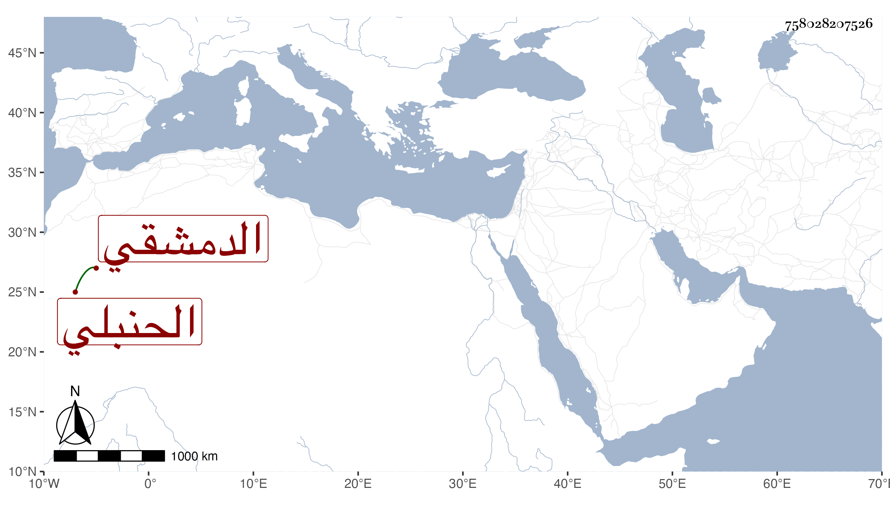

0902Sakhawi.DawLamic.ITO20230111-ara1.EIS1600.758028207526
Biography ID: 758028207526
769
عبد القادر بن محمد بن عبد الله الضميري الدمشقي الحنبلي . لقيه العز ابن فهد فكتب عنه قصيدة نبوية من نظمه أولها :
| يا سعد لك السعد | إن سعى بك مرقال |
وأجاز وقال إنه شرح كلا من أربعي النووي وسماه الدرر المضية والقطربية وعارض البردة بقصيدة سماها الزهر في الاكام في مدح النبي عليه السلام ، وبانت سعاد وغير ذلك .
